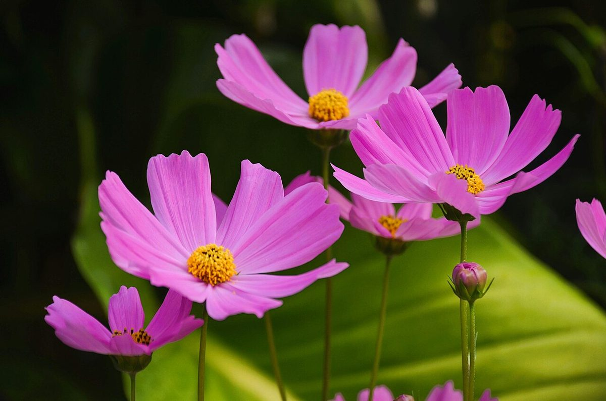
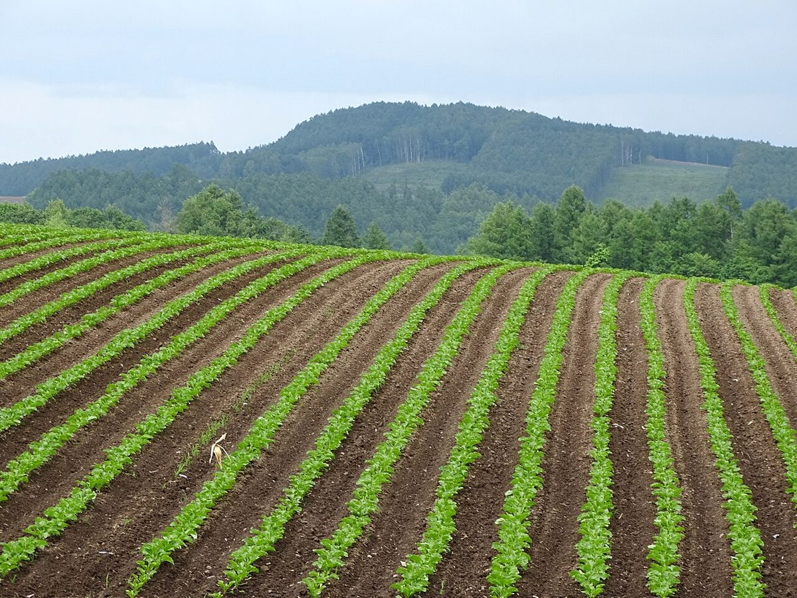
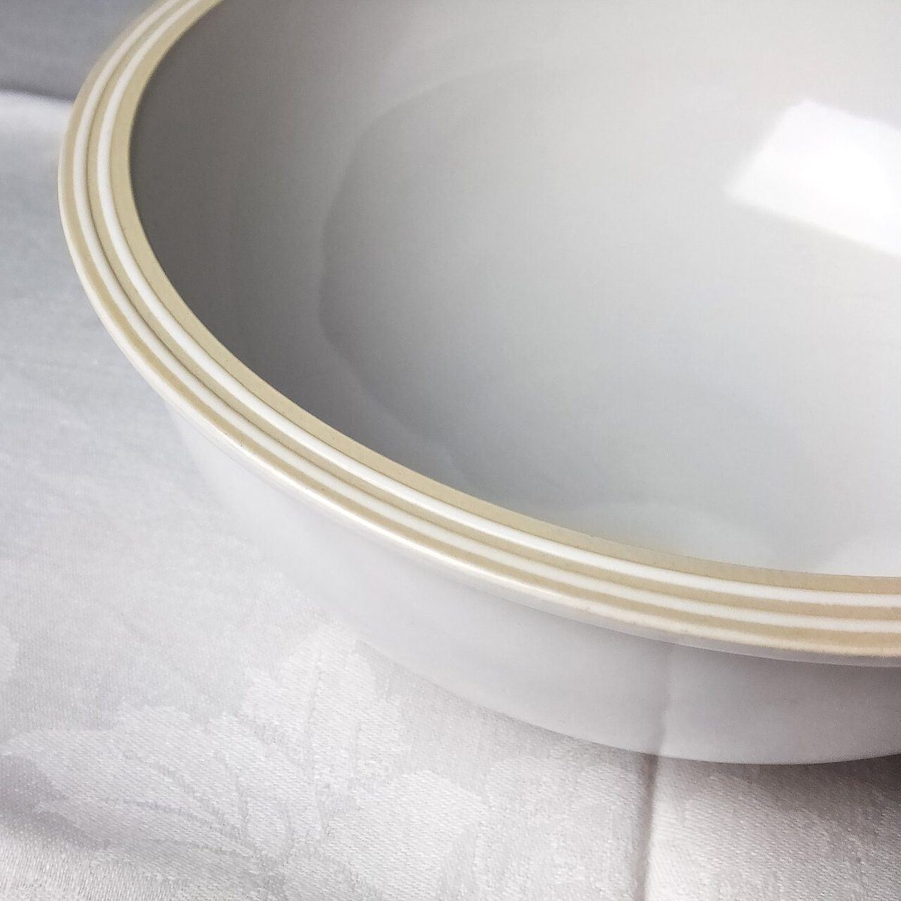
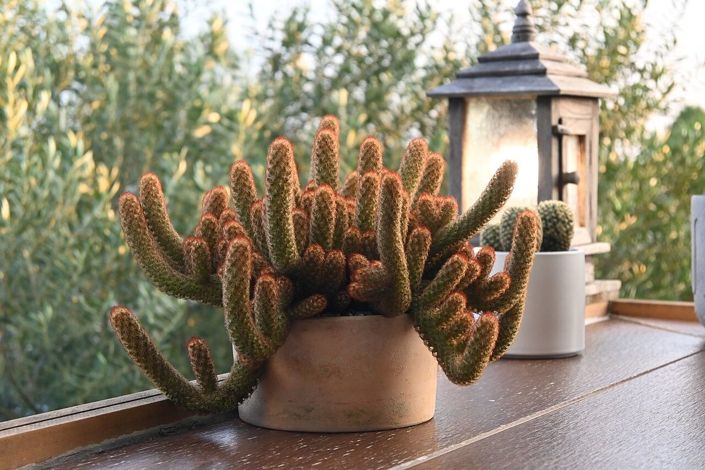
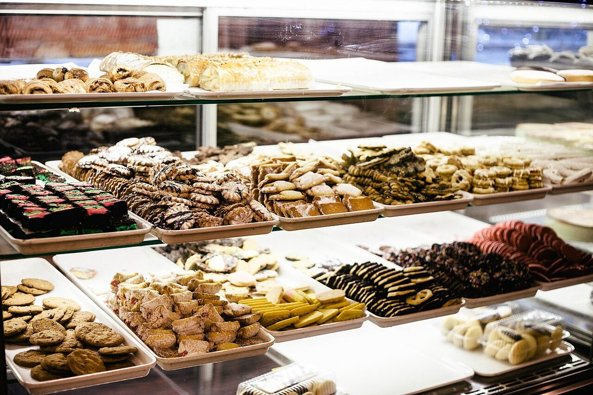

Quyana Farm & Cafe
郊外でひと息つくための場所、という見立ての試作ページです。
※この見立ては制作側の案です。お店の理念や由来ではありません。

ここに来る、ということ
群馬県館林市赤生田町にある、ファーム&カフェです。
ファームの名を冠したカフェ、というところから、このページでは「郊外で、少しだけ足を止める時間」を思い描いてみました。
お店の中のこと、メニューのこと、営業のことは、まだ確かな情報がありません。分かっていないことは、分かっていないままお伝えします。
群馬県館林市赤生田町602-1

制作側の案
急がない日の寄り道に、ちょうどいい余白を。
ここに書いたのは、制作側が思い描いたイメージです。お店の言葉ではありません。
お店の様子やメニューなど、気になることは、お店に直接おたずねください。
メニューの詳細は準備中(お問い合わせください)です。



持ち帰る、という選択肢
お持ち帰りができるかどうかは、確認できていません。
テイクアウトの有無:準備中(お問い合わせください)
また来る前に
日々の様子は、お店のInstagramで見られます。
ご来店の前に、営業の状況もあわせてお問い合わせいただくと安心です。